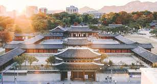

ALGORITMA PEMROGRAMAN
Pengertian Algoritma Pemrograman
Algoritma didefinisikan sebagai suatu urutan yang digunakan dalam memecahkan masalah dengan sistematis. Dalam kegiatan pemrograman, algoritma sering disebut sebagai logika atau atau dalang dalam menentukan sebuah program yang hendak dibuaynya. Maksud dari definisi di atas, dapat dijabarkan lagi bahwa jika suatu pemrograman memerlukan pemecahan masalah yang menggunakan rumus matematika, maka perlu diselesaikan dengan perhitungan. Akan tetapi, jika pemecahan masalah tersebut hanya membutuhkan unsur logika saja, maka cukup diselesaikan dengan menggunakan logika sederhana. Jadi, penggunaan algoritma pemrograman ini harus disesuaikan dengan unsur permasalahan yang terkait pada programnya. Pada dasarnya, ada dua bentuk penentuan penggunaan algoritma pemrograman sebagai tahap awal pembuatan program, yakni:
• algoritma yang disajikan dengan menggunakan gambar ataupun
• algoritma yang disajikan menggunakan tulisan.
Penyajian algoritma dengan tulisan ini biasanya berisi pseudocode, sedangkan penyajian algoritma dengan gambar biasanya terdiri dari diagram-diagram (flowchart). Namun, yang menjadi tantangan tersendiri bagi seorang programmer adalah pada saat mengimplementasikan algoritma yang telah ditentukan menjadi kode atau script yang sudah tertata agar dapat berjalan sesuai dengan keinginannya. Untuk itu, penting bagi para programmer mengetahui lebih detail mengenai algoritma pemrograman supaya dapat berhasil dalam membangun sebuah program-program berupa software ataupun aplikasi.
--Baca Selengkapnya--SEJARAH ISLAM DI KOREA SELATAN
Islam adalah agama minoritas di Korea Selatan. Islam pertama kali datang ke Korea melalui jalur perdagangan pada abad 9 M. Pada abad 14 M, kerajaan Korea memberlakukan politik isolasi dan mewajibkan seluruh rakyatnya memeluk agama Konghucu. Oleh karena itu, hubungan Islam dan Korea terputus
Pada tahun 1962, pemerintah Malaysia menawarkan hibah sebesar US $ 33.000 untuk sebuah masjid yang akan dibangun di Seoul. Namun, rencana itu gagal karena inflasi. Tidak sampai 1970-an, ketika hubungan ekonomi Korea Selatan dengan banyak negara Timur Tengah menonjol, menunjukkan bahwa minat terhadap Islam mulai bangkit kembali. Beberapa warga Korea yang bekerja di Arab Saudi masuk Islam, ketika mereka menyelesaikan masa tugas kerja mereka dan kembali ke Korea, mereka didukung sejumlah Muslim penduduk asli. Masjid Pusat Seoul akhirnya dibangun di Seoul lingkungan Itaewon pada tahun 1976. Saat ini ada juga masjid di Busan, Anyang, Gwangju, Jeonju dan Daegu. Menurut Lee Hee-Soo (Yi Hui-su), Presiden Korea Islam Institute, ada sekitar 40.000 Muslim yang terdaftar di Korea Selatan, dan sekitar 10.000 diperkirakan penganut yang sangat aktif.
Korea Muslim Federation (KMF) mengatakan akan membuka sekolah dasar Islam pertama bernama SD Pangeran Sultan Bin Abdul Aziz pada Maret 2009 dengan tujuan membantu Muslim di Korea belajar tentang agama mereka melalui kurikulum sekolah resmi. Rencana sedang dilakukan untuk membuka sebuah pusat budaya, sekolah menengah dan bahkan universitas. Abdullah Al-Aifan, Duta Besar Arab Saudi di Seoul, menyerahkan $500.000 untuk KMF atas nama pemerintah Arab Saudi.
Jumlah Muslim di Korea
- Korea Selatan
- Korea Utara